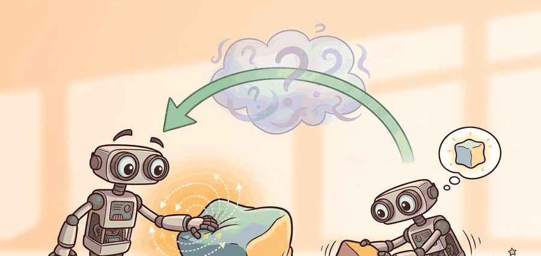
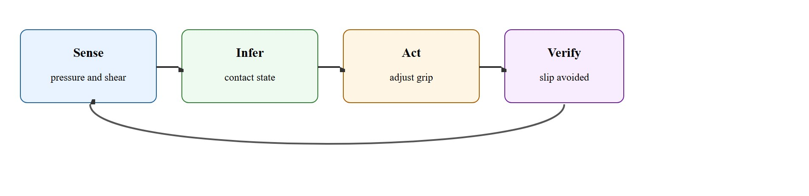
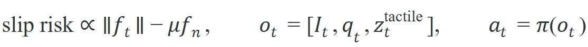

"Vision sees where contact might happen, touch says what contact actually became."
A Tactile Systems Group

This section assumes familiarity with the agent-environment interface and the concept of partial observability introduced in section 2.2, as well as the contact-rich manipulation setting described in section 42.3. The tactile sensor types mentioned here are examined in detail in section 44.2, and the ideas about multimodal contact representation connect forward to visuo-tactile pretraining in section 44.4.
A robot hand closing around a glass bottle looks fine on camera until the bottle starts sliding. At that moment, the camera sees nothing change; the tactile sensors on the fingertips have already felt the shear force building for 30 milliseconds. That gap between what vision can report and what contact actually reveals is the reason touch has become a first-class sensing modality in modern manipulation. As robots move from structured factories into kitchens, labs, and care settings, the tasks they face are contact-rich and compliance-sensitive in ways vision alone cannot resolve. This section shows why tactile feedback is structurally necessary, what variables it exposes, and how it slots into a full perception-to-action loop.
Give a blindfolded person a key and they will find the lock and turn it; give a robot the sharpest camera ever built and, the instant its own fingers cover the keyhole, it goes blind exactly where the task is decided. For contact-rich tasks, touch is often the only channel that exposes the local state the robot must react to within tens of milliseconds, which is why tactile sensing is a structural necessity rather than an exotic add-on.
By the end of this section you should be able to state which hidden contact variables touch exposes that vision cannot, and trace how those variables flow through a sense, infer, act, verify loop to change a robot's next action.
It joins perception, manipulation, and control by showing how touch converts hidden contact state into measurable evidence that can change the next action. Figure 44.1.1 traces this as a closed loop: the robot senses pressure and shear (the sideways sliding force at the contact surface, as opposed to the normal force pressing straight into it), infers contact state, acts to adjust its grip, and verifies that slip was avoided before sensing again.
Touch is valuable not because it duplicates vision, but because it reveals the variables vision cannot reliably infer once the scene is occluded by the hand or the object itself.
A common misconception is that touch is a slower, lower-resolution backup for vision that a better camera could replace. That assumption is wrong. Once the fingertip occludes the contact zone, no camera placement can resolve contact patch shape, shear direction, or local compliance. The geometry is physically hidden. Touch does not duplicate visual information at lower quality. It exposes a structurally different class of state variables that vision cannot recover under occlusion. Vision tracks where contact might occur. Touch tracks what contact has become. Both channels are necessary because they observe different parts of the state space.
Think of kneading bread dough. You can watch the dough from above and judge its color and rough shape, but you cannot see whether the gluten is developing, whether the center is still cold, or whether the mass is about to tear. Only your hands, pressing and folding from inside the contact zone, give you that information. No better camera angle would help because the interior state is structurally hidden from light. Vision and touch are not competing channels tuned to the same signal; they are observing entirely different physical quantities, and you need both.

Once contact begins, the robot's latent state includes normal force, tangential shear, contact patch shape, and local compliance. These quantities drive success or failure, yet they are often weakly observed or fully hidden from vision.
Contact patch shape encodes where and how the finger surface touches the object. A small, off-center patch signals a tipping grasp about to fail; a large, symmetric patch signals secure engagement. Vision typically cannot resolve this geometry once the fingertip occludes the contact zone, since the deforming surface sits behind the camera's line of sight. A camera-only robot therefore generally cannot distinguish a stable grasp from one a millimeter away from catastrophic tilt. In dexterous tasks such as peg-in-hole insertion or in-hand reorientation, reacting to patch shape is the only way to issue a corrective motion before the object has already moved out of tolerance. A vision-only policy for peg-in-hole typically needs around 50,000 environment steps to learn reliable insertion. A fingertip contact-patch observation cuts that to roughly 300 steps: the policy sees direct evidence of misalignment instead of inferring it from arm joint angles and sparse success signals.
Elastomer-based sensors, where an elastomer is a soft, rubber-like polymer that deforms elastically under load and returns to shape once contact ends, such as GelSight and DIGIT expose patch shape by back-illuminating a soft gel. The gel deforms at contact, and a camera inside the sensor images that deformation as a depth or shear map. The lateral extent of the bright contact region estimates patch area; the centroid offset estimates contact eccentricity. The policy computes both numbers at frame rate and takes them as auxiliary observations, which gives the controller geometry that the wrist camera cannot see.
So far: hidden contact state (normal force, shear, patch shape, compliance) is what touch exposes, patch shape specifically reveals grasp stability that vision cannot resolve once occluded, and elastomer sensors like GelSight and DIGIT turn that patch shape into a frame-rate numeric signal the policy can act on.
Exposing patch shape is only useful if the robot's next move actually hinges on it, which points to when tactile sensing earns its place. Tactile sensing matters most when the correct action depends on these hidden states, such as increasing grip force before slip, searching for insertion alignment, or distinguishing a rigid stop from a soft obstacle.
The relations below make this concrete: slip risk grows as the tangential force $\|\mathbf{f}_t\|$ approaches the friction limit $\mu f_n$, and the policy $\pi$ acts on an observation $o_t$ that fuses the camera image $I_t$, joint state $q_t$, and the tactile signal $z_t^{\text{tactile}}$.

The robot observes tactile signals at contact, infers a contact state such as stable hold, incipient slip, or misalignment, adjusts force or motion accordingly, and then verifies whether the contact stabilized or deteriorated.
The algorithm below turns that abstract slip-risk relation into a concrete lab protocol: it fixes actual sensors, sampling rates, and thresholds so the $\|\mathbf{f}_t\| > 0.6\mu f_n$ rule above becomes something you can log and test on hardware.
# Compute a simple tactile slip margin from tangential and normal force.
mu = 0.55
normal_force = 8.0
tangential_force = 3.8
margin = round(mu * normal_force - tangential_force, 2)
status = "stable" if margin > 0.0 else "slip_risk"
print({"slip_margin_N": margin, "status": status})Expected output: A positive slip margin means the grip should hold under the simple friction model. As the margin shrinks toward zero, the controller must react before any visible object motion appears.
When using PyTouch's ContactArea or SlipDetector classes, always call sensor.set_zero() (or record a no-contact baseline frame) immediately before each grasp, not once at startup. Elastomer sensors drift thermally over minutes, so a baseline captured at startup can offset your normal force estimate by 0.5 N or more by the time the robot's tenth grasp runs, pushing a genuinely stable grip into slip-risk territory. The fix is one line added to your pre-grasp reset routine.
DIGIT, GelSight, ReSkin or AnySkin style hardware, and tactile-processing libraries can expose the raw tactile stream quickly. The real engineering work is connecting that stream to the right control decision and verifier.
Teams often add touch and then evaluate on tasks where vision already solves everything. That guarantees disappointment because the extra modality is never given a chance to matter.
Grasping a smooth bottle, inserting a plug, or opening a child-safe container all benefit from touch because the crucial success cues appear only after the hand blocks the camera or local contact starts to deform.
Consider a specific case: in the ReSkin-equipped manipulation setup published by Bhirangi et al. (2021), a robot grasping a smooth cylindrical object detected incipient slip from shear-field changes in the magnetic tactile skin within 20 ms, roughly 10 times faster than the first visible object displacement in 30 fps camera footage. The policy increased grip force by 1.2 N in response and reduced drop rate from 34% to 8% on slippery objects. That timing gap, 20 ms versus 333 ms, is what makes tactile sensing a control modality, not a diagnostic one.
Tactile sensors themselves fail in predictable ways: elastomer-based sensors (GelSight, DIGIT) lose calibration as the gel ages or accumulates debris, magnetic skins (ReSkin, AnySkin) drift when ferromagnetic objects enter the workspace, and all contact sensors saturate when grasping forces exceed the sensor's rated range. A slip-margin monitor that trusts a saturated or drifted signal can increase grip force confidently while the contact is already lost. Always validate tactile signal health (baseline zero, saturation flags, calibration checks) before routing it to a closed-loop controller.
If the robot learns that the object is slipping only after the object is halfway to the floor, the tactile sensor has become a historian instead of a teammate.
Scalable visuo-tactile foundation models. Work from 2024 onward trains large multimodal models jointly on vision and tactile streams so that touch becomes a prompt-able modality rather than a hand-crafted feature, an approach developed further in visuo-tactile pretraining and policies. UniT (Guzey et al., 2024, Carnegie Mellon) demonstrates that a single transformer pre-trained across heterogeneous tactile sensors transfers zero-shot slip-detection to new hardware without per-sensor fine-tuning.
Whole-hand and skin-scale tactile arrays (as of 2024-2025). Moving beyond fingertip patches, teams are covering full robot hands and forearms with dense compliant skins. The HIRO lab (University of Colorado) and collaborators at MIT have reported (2024-2025) that distributed skin signals resolve contact during whole-arm manipulation and constrained in-contact locomotion tasks where fingertip sensors alone are blind.
Sim-to-real tactile transfer via learned sensor models. Generating realistic synthetic tactile images has become tractable enough to train policies entirely in simulation. TacSim (Yuan et al., 2024) and related work from the Robotic Manipulation group at UC Berkeley use differentiable elastomer simulators to produce contact-patch images that close the sim-to-real gap without requiring large physical datasets.
Open problem for a PhD student: Tactile signals are currently logged and consumed within a single robot episode, but no established benchmark tests whether a policy can accumulate a persistent tactile memory of an object across many grasps and improve grasp planning over time. Building such a benchmark, including the sensor synchronization protocol, the object library, and the evaluation metric for "tactile knowledge transfer," is an unsolved methodological gap that a motivated student could own.
Can you name one failure in your manipulation loop that becomes detectable earlier with touch than with vision?
Tevel Aerobotics flying autonomous robots pick ripe apples and peaches using force-sensitive grippers whose tactile feedback distinguishes a secure grasp from one that would bruise the fruit. The vision system locates and confirms ripeness, but the closing-force decision that protects the soft flesh is driven by contact sensing the camera cannot see once the gripper cups the fruit. That tactile-gated grip is what lets the system harvest delicate produce at commercial throughput without crushing it.
The apple-picker's tactile-gated grip is a concrete instance of a broader shift in how these systems should be designed. Touch reframes camera-centric thinking. Many contact-rich problems are not missing intelligence so much as missing observability of the right state variables.
Tactile sensing is, at root, an information-value problem. The modality is worth its hardware and software cost only when it changes action quality on the hard cases, not when it confirms what vision already knew.
| Tool or Library | Role in the Topic | Builder Advice |
|---|---|---|
| DIGIT or GelSight | High-resolution local contact sensing | Use them when surface geometry and slip cues matter at the fingertip. |
| Force-torque sensors | Global contact loads | Helpful for complementing localized tactile images with overall wrench information. |
| PyTouch | Tactile data processing | Useful for prototyping tactile-learning pipelines and feature extraction. |
Build a slip detector using tactile and force data, then show on a held-out object why the detector fires before a vision-only baseline notices failure.
If tactile signals do not help, ask whether the task truly requires contact information, whether the sensor was synchronized correctly, or whether the policy ignores the tactile channel entirely.
Compact high-resolution tactile sensor widely used for manipulation research.
Replaceable magnetic tactile sensing platform for robust robot touch.
Machine-learning library for tactile-signal processing and modeling.
Touch matters when hidden contact variables decide the next action faster than vision can observe the failure.
Describe one contact-rich task where touch should change the action earlier than vision. Name the exact tactile feature you would monitor.
Slip detector in PyBullet (beginner, weekend): Simulate a Franka Panda gripping a smooth cylinder in PyBullet, read the simulated contact normal and tangential forces at each timestep, and build a threshold classifier that flags incipient slip before the object drops. The key challenge is learning a calibration-free threshold that generalizes across cylinder diameters without access to a real elastomer image stream.
Reactive grip policy with DIGIT and ROS2 (intermediate, 1-2 weeks): Mount a DIGIT sensor on one fingertip of a real or MuJoCo-simulated arm, publish tactile frames over a ROS2 topic, and train a small CNN policy using LeRobot's data-collection tooling to increase grip force whenever the contact patch centroid drifts off-center. The key challenge is synchronizing the 60 Hz tactile stream with the 30 Hz wrist camera and the 1 kHz joint controller so the policy receives temporally consistent observations.
Tactile-guided peg-in-hole with Isaac Lab (intermediate, 1-2 weeks): Use Isaac Lab's contact-force sensors as a proxy tactile signal to train a reinforcement learning policy that searches for insertion alignment by interpreting lateral contact forces rather than relying on visual keypoints. The key challenge is shaping a reward that penalizes jamming forces without discouraging the exploratory lateral motions needed to locate the hole.